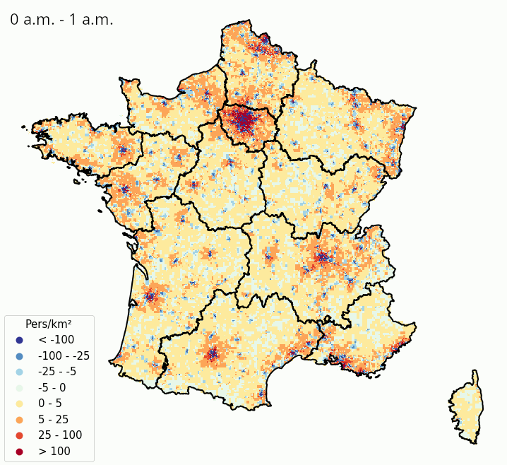
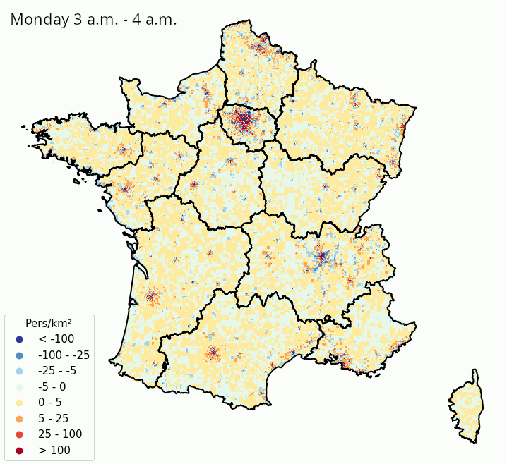
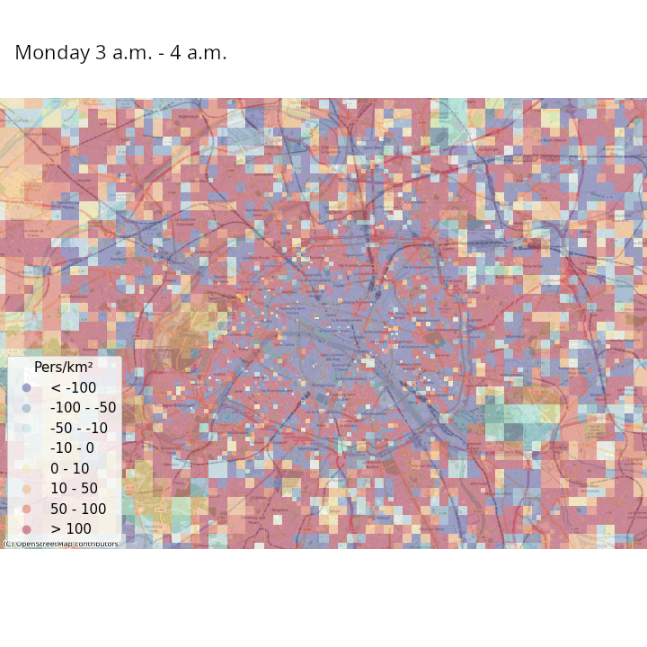
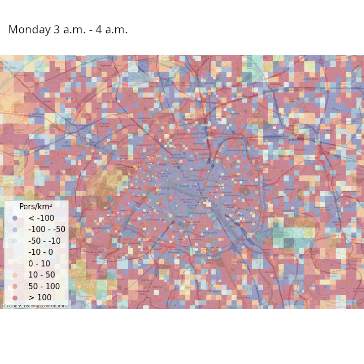

Données géolocalisées
Introduction
Disposer de données géolocalisées pour produire de la statistique publique est un besoin qui se fait de plus en plus fort. Pour cause, un intérêt croissant est accordé aux caractéristiques spatiales des phénomènes que la statistique publique a pour rôle de décrire. Le comité d’experts des Nations Unies sur la gestion de l’information géospatiale mondiale (UN-GGIM) a d’ailleurs reconnu l’importance cruciale d’intégrer les informations géospatiales aux statistiques et aux données socio-économiques et le développement d’une infrastructure statistique géospatiale.
La production et la diffusion accrue de données géolocalisées dépasse le cadre de la statistique publique. La généralisation de traces numériques géolocalisées (données mobile, GPS, localisation d’adresses IP…) a entraîné une multiplication des acteurs valorisant des données spatiales. Certains acteurs de l’écosystème de la donnée sont spécialisés dans la collecte ou la valorisation de sources géolocalisées collectées par d’autres.
Un premier apport fondamental des données géolocalisées est qu’elles permettent de calculer des indicateurs avec une granularité spatiale plus fine que les découpages administratifs ou historiques classiques. Cette approche permet d’éclairer des phénomènes socio-économiques locaux comme les problématiques de mixité (Galiana, Sémécurbe, et al. 2020). L’Insee met à disposition en open-data des données très fines sur une grande variété de facteur. Les sites officiels geoportail et statistiques-locales.insee.fr ou encore les sites faits par des tiers comme celui d’Etienne Côme ou hubblo permettent d’explorer la richesse des sources fines mises à disposition. Pour désigner les sources les plus fines, on parle de données carroyées, publiées sur des carreaux pouvant aller de 200 mètres à plusieurs kilomètres de côté (voir Figure 1). Une telle granularité permet de capter certains phénomènes démographiques ou socio-économiques qui ne sont pas détectables au niveau de l’IRIS ou de la commune1.
Les données publiques géolocalisées
Plusieurs grands répertoires de données de l’Insee sont ainsi géolocalisés aujourd’hui :
Filosofi(pour Fichier localisé social et fiscal) est un fichier de synthèse de sources fiscales (déclarations de revenus des ménages, taxe d’habitation, fichier d’imposition des personnes) enrichi par les données sur les prestations sociales fournies par les organismes sociaux, pour un peu plus de 26 millions de ménages fiscaux en France. Les résidences des ménages y sont géolocalisées ;Fidéli(pour Fichier démographique sur les logements et les individus) peut se définir comme une base annuelle exhaustive de données statistiques sur les logements - qui sont géolocalisés - et de leurs occupants ;- La
Base Permanente des Equipements (BPE)est une source qui fournit le niveau de services rendus à la population sur un territoire, en répertoriant un large éventail d’équipements et de services accessibles au public sur l’ensemble de la France au 1er janvier de chaque année. La plupart des types d’équipement (commerce, services, santé, etc.) sont géolocalisés dans la base accessible en open data ; - Les établissements du répertoire
Sirenesont géolocalisés (hors Mayotte) et ces données sont mises à disposition des utilisateurs en open data. La géolocalisation des établissements actifs de 200 salariés ou plus a été systématiquement vérifiée par des gestionnaires de reprise de géolocalisation, ainsi que celle des établissements de 20 à 199 salariés pour lesquels la géolocalisation automatique est incertaine ; - Le
Recensement de la Populationconduit aujourd’hui à une publication de statistiques à la maille des IRIS. Une première diffusion de données carroyées à partir du recensement suite à une phase de géolocalisation est prévue pour 2024.
En général, la géolocalisation est réalisée par une combinaison d’un appariement avec un référentiel d’adresses géolocalisées construit à partir du Répertoire d’Immeubles Localisés (RIL) pour les besoins du Recensement de la Population dans les communes de plus de 10 000 habitants, et de la géolocalisation des parcelles cadastrales. Ce sont ainsi ces deux répertoires administratifs qui permettent de géolocaliser de nombreuses autres sources. Une reprise manuelle peut être faite dans les cas où la géolocalisation n’est pas possible ou s’est faite avec un faible niveau de confiance.
L’appariement entre les grands répertoires géolocalisés et d’autres sources peut donner naissance à des bases de données extrêmement riches et ainsi à des études de phénomènes socio-économiques à des échelles spatiales très faibles. Par exemple, André and Meslin (2021) constituent une base exhaustive rassemblant les caractéristiques des ménages et la description détaillée de leur patrimoine immobilier, à partir de différentes sources administratives (le cadastre, le fichier Fidéli, les revenus fiscaux et sociaux, les transactions immobilières et des données sur les sociétés civiles immobilières). Cette base permet d’analyser finement la concentration de la propriété immobilière en fonction du niveau de vie ou encore le profil redistributif de la taxe foncière (part de cette taxe dans le revenu disponible en fonction de ce dernier).
Les données géolocalisées sont relativement récentes à l’Insee et ne sont pas encore exploitées à leur plein potentiel. Preuve de la reconnaissance de ce dernier, un Manuel d’analyse spatiale (Loonis and Bellefon 2018) a été publié pour former les agents de l’Institut (entre autres) à la fois sur la théorie et l’application pratique avec R de méthodes d’analyse spatiale.
Une attention particulière doit être portée lors de la publication d’informations à un niveau fin à la protection de la vie privée et au respect du secret statistique. En effet, les réglementations européennes et nationales interdisent la diffusion de données permettant la réidentification de l’identité de ménages (ou d’entreprises) concernés. Or c’est un risque qui devient important dès lors que l’on publie des indicateurs à une échelle territoriale fine.
Pour garantir la confidentialité au moment de la publication d’indicateurs, une possibilité est de contrôler les cellules au sein desquelles les calculs ont été faits pour identifier des cellules à risque, typiquement des cellules avec une population faible. Ces cellules à risque peuvent être fusionnées avec d’autres cellules ou subir d’autres traitements spécifiques (imputation de l’indicateur d’intérêt par exemple) pour diminuer le risque de réidentification (Loonis and Bellefon 2018).
Une autre approche consiste à travailler en amont du calcul des indicateurs à publier. On associe à chaque observation un niveau de risque qui représente sa probabilité d’être réidentifié et qui dépend des caractéristiques des observations voisines. Les observations présentant un risque élevé peuvent ensuite subir un traitement spécifique, comme la permutation de leurs caractéristiques avec d’autres observations (méthodes de swapping).
De nombreux acteurs privés collectent des données géolocalisées, en général en grande quantité, qui ont un fort potentiel pour la statistique publique. Dans le cadre de partenariats, l’Insee peut obtenir des accès temporaires (parfois indirects) à de telles données.
Données de téléphonie mobile
Les données de téléphonie mobile en sont un bon exemple. On distingue en général 2 types de données de téléphonie mobile :
- Les Call Detail Records (CDR) qui sont générés lors des communications actives d’un utilisateur à travers son téléphone mobile (appel, envoi de SMS, etc.);
- Les données de signalisation passive qui sont collectées par les opérateurs principalement à des fins d’optimisation et de surveillance de leurs réseaux. Ces données de signalisation sont caractérisées par une fréquence temporelle bien supérieure à celle des données CDR.
Ces deux types de données contiennent la même information spatiale : chaque observation contient des informations sur l’antenne radio avec laquelle le téléphone est en communication. Les données CDR permettent de produire des statistiques intéressantes sur les populations présentes et les déplacements de la population. Par exemple, Galiana, Suarez-Castillo, et al. (2020) observe à partir de comptages issus des données CDR que la répartition de la population sur le territoire s’est significativement modifiée à la mise en place du confinement en mars 2020, au début de la pandémie de Covid-19 (voir Figure 2). Pendant le confinement, la population a davantage passé la nuit dans son département de résidence qu’avant le confinement. Au moment du déconfinement, les mêmes données de CDR indiquent que les mouvements de population sur le territoire ont repris partiellement, le sûrcroit de population se trouvant dans son département de résidence diminuant de moitié par rapport à la période de confinement.
Les données de signalisation permettent d’aller plus loin, par exemple en estimant des populations présentes avec une fréquence temporelle élevée (Ricciato et al. 2020). Pour un maillage territorial donné, par exemple des carreaux de 200 mètres de côté, les opérateurs téléphoniques peuvent modéliser leur réseau de manière à estimer la probabilité qu’un téléphone se trouvant au sein d’un carreau \(i\) soit détecté dans une cellule (aire couverte par une antenne) \(j\). Ceci permet d’avoir une estimation du lieu où se trouvent tous les téléphones en lien avec le réseau quasiment en continu. En repondérant les nombres de téléphones estimés dans chaque tuile en fonction du nombre du nombre de téléphones considérés comme résidant dans chaque tuile et la population effectivement résidente de chaque tuile (obtenue grâce aux données fiscales géolocalisées), il est possible d’avoir une estimation en temps réelle de la population présente pour le maillage territorial choisi.
La Figure 3 et la Figure 4 illustrent ces estimations des variations de densité de population présente, heure par heure dans une même journée et jour par jour dans une même semaine, respectivement en France métropolitaine et à Paris et ses alentours. Même s’il faut prendre ces résultats avec précaution au vu de la simplicité de la méthodologie adoptée, on constate des tendances intéressantes :
- On peut observer les variations de populations présentes intra-journalières dues aux mouvements des habitants des banlieues d’agglomérations qui travaillent en centre-ville. La population présente a tendance à être élevée dans la périphérie des villes la nuit, où elle diminue à partir de 9 heures du matin et jusqu’au soir au profit des centres-villes ;
- Lorsqu’on regarde Paris et ses alentours avec une granularité spatiale plus fine, les variations de populations présentes intra-journalières discriminent les zones avec une forte activité touristique, économique et de loisirs des zones résidentielles ;
- Les variations de populations présentes à l’intérieur de la semaine montrent que les villes (et en particulier Paris) se vident en partie pendant les week-ends, au moment où les régions côtières et montagneuses ont tendance à accueillir des visiteurs. À Paris, certaines zones voient leur population présente augmenter la nuit lors des week-ends, ce qui suggère une activité nocturne ou des nuitées touristiques.
 
 

L’utilisation de données de téléphonie mobile pour la production de statistiques publiques pose des questions :
- Questions sur la qualité : les données disponibles ne concernent qu’un sous-champ de la population, par exemple les clients d’un opérateur en particulier, ce qui engendre en général des biais de sélection. Dès lors, il est nécessaire d’évaluer la représentativité de ce sous-champ par rapport à la population générale pour s’assurer de la validité (partielle) des résultats;
- Questions sur la perennité : les données viennent de tiers privés et l’Insee n’a donc aucun contrôle sur des possibles changements de format ou de méthode de collection des données. Dans ce contexte, il n’y a pas de garantie que les indicateurs restent comparables au cours du temps.
- Questions d’éthique : avant d’utiliser ces données personnelles, il faut s’assurer que l’usage qui en est fait est proportionné et que la production statistique qui en résulte a une valeur ajoutée pour la population.
- Questions légales : les aspects légaux autour des données personnelles sont aussi à prendre en compte, en lien d’ailleurs avec les questions d’éthique et les questions sur la pérennité. Aujourd’hui la législation européenne et son application dans la loi française ne sont pas favorables à l’utilisation de données téléphoniques de signalisation pour la statistique publique. Même si elles venaient à le devenir, il n’y a aucune garantie qu’on ne revienne pas quelques années après à la situation actuelle.
Données de réseaux sociaux
Les réseaux sociaux sont une autre source privée d’informations parfois géolocalisées. Les données issues de réseaux sociaux ont potentiellement des applications intéressantes pour la statistique publique :
- En complément des données de téléphonie mobile, elles peuvent participer à l’estimation de populations présentes en temps réel, avec un apport particulier pour le tourisme. Pour cause, les touristes sont souvent absents des données de téléphonie mobile et ont tendance à être très actifs sur les réseaux sociaux ;
- Elles peuvent servir à estimer le niveau de bien-être de la population à partir de méthodes d’analyse de sentiment ;
- Elles peuvent servir à analyser l’opinion publique à propos de sujets ou d’évènements particulier. Par exemple,
CBS(INS des Pays-Bas) utilise un indicateur de sentiment calculé à partir de données issues de réseaux sociaux pour complémenter un indicateur de confiance des consommateurs lui calculé à partir de données d’enquête (Brakel et al. 2017).
Aujourd’hui plusieurs réseaux sociaux fournissent des interfaces pour accéder à leurs données. Par exemple, Twitter propose une API qui permet de récupérer des tweets à partir de requêtes simples à construire. Il est ainsi possible de récupérer tous les tweets contenant un ou plusieurs mots clés, en excluant les retweets et les tweets sans information de géolocalisation. Tous les tweets ne contiennent pas d’information sur la position de l’appareil utilisé au moment de l’envoi : il faut que l’utilisateur ait activé cette fonctionnalité. On peut avec de telles requêtes de connaître la position et l’heure exactes de l’envoi des tweets - géolocalisés - portant sur un sujet.
Des forts biais de sélection peuvent exister lorsque l’on exploite les données de réseaux sociaux. Dans le cas de Twitter par exemple, les personnes qui tweetent, et a fortiori les personnes qui tweetent en partageant leur localisation ne constituent a priori pas un échantillon représentatif de la population générale. C’est encore davantage le cas sur un sujet en particulier. A priori, les gens qui communiquent sur ce sujet sont plus souvent concernés directement que la population générale.
Pour publier des indicateurs relevant de la statistique publique et calculés entièrement à partir de données de réseaux sociaux, il est nécessaire d’adopter un cadre de contrôle qualité très strict, en commençant par dresser une liste exhaustive des différents biais possibles (Olteanu et al. 2019).
References
Footnotes
Le projet
gridvizporté parEurostatvise à proposer un outil facilitant la construction de mosaiques agrégées à partir de données spatiales.↩︎